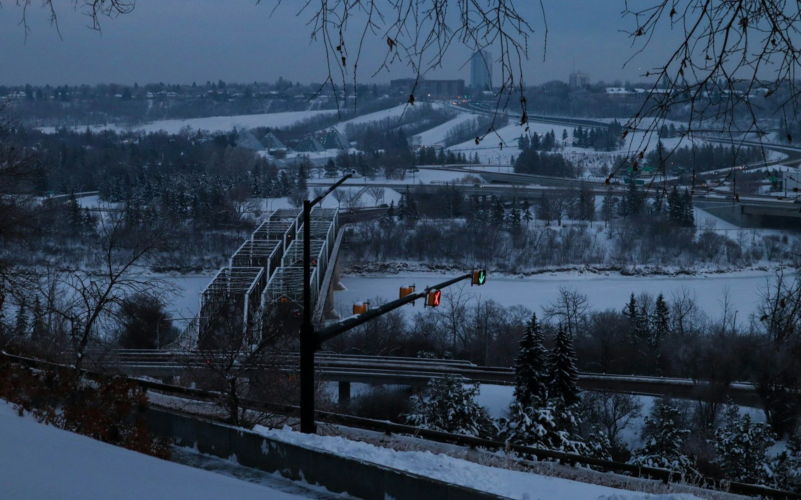
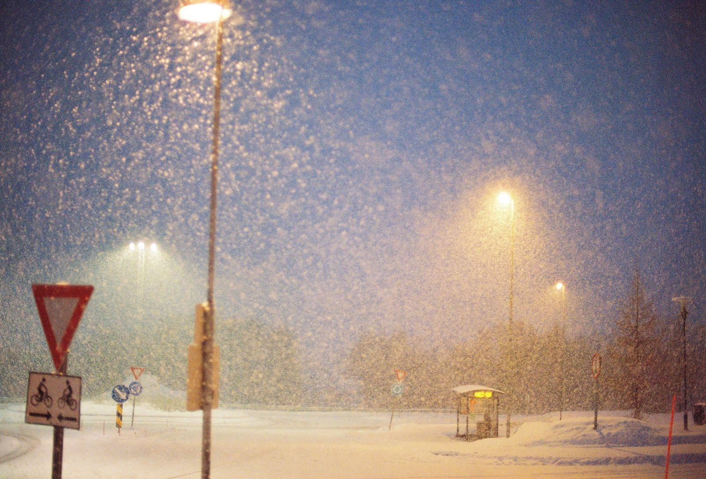
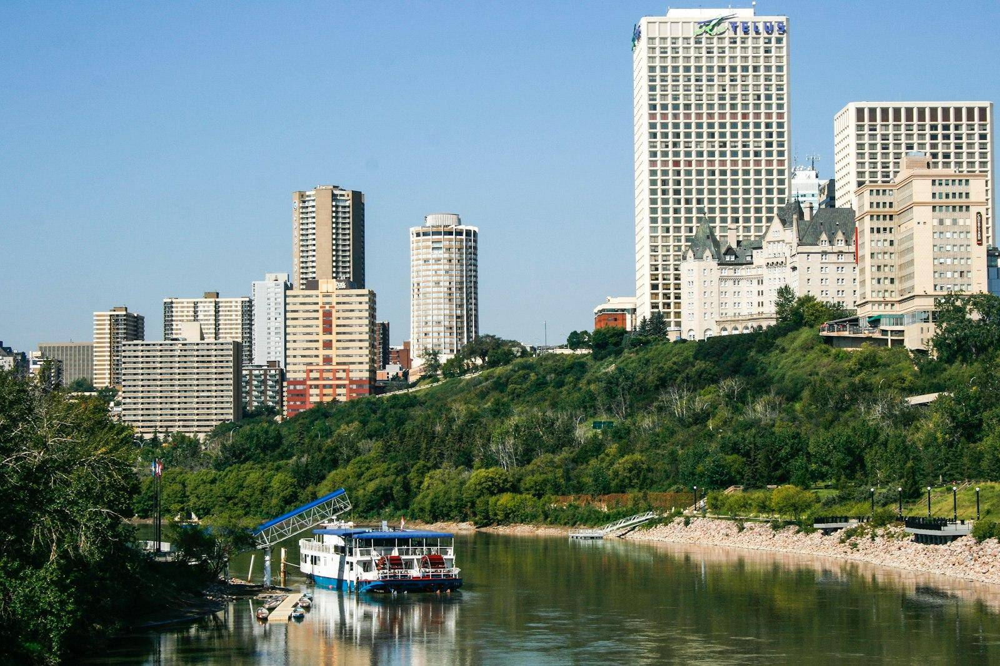
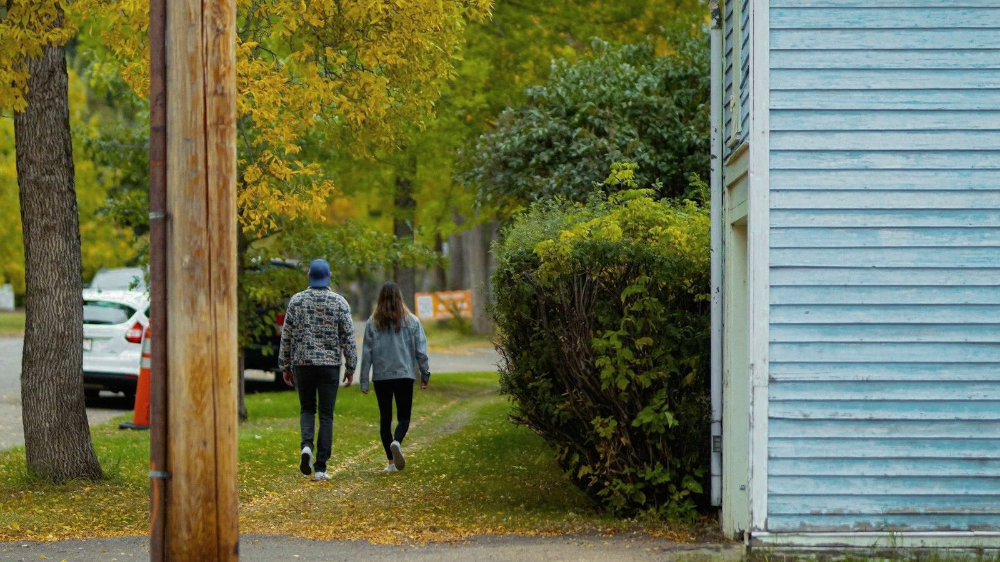

Where do the daytime visitors go when the temperature drops?
We will study foot traffic by month, by week, and by hour to locate the quiet, then ask what it would take to bring people back on a Tuesday afternoon in February.
Responding to the RFP · Prepared for the Old Strathcona Business Association
OSBA has asked for a strategic proposal for Old Strathcona's next chapter. Ours is due November 30. Until then, this is how we read the brief, what we already see on the street, and the questions we will take into each season of the year.
What OSBA is asking for
The brief identifies the challenge and the desired outcomes. It does not prescribe a target audience, a positioning, a message, or a solution. We are expected to make and justify strategic choices based on research, which is how we prefer to work.

What we already see
One of us lives a block from Whyte Avenue and has been its customer for two years. From that vantage point the strengths are clear: a nightlife that, in our view, exceeds any other area of Edmonton, and a distinctive mix of independent businesses, restaurants, shops, and cultural experiences.
So are the problems. Streets that go quiet through the winter months. Barriers to daytime visitation that we have yet to measure. Construction that disrupts access for the regulars a business depends on. And an after-dark side, seen firsthand, that does not always match the district's character during the day.
OSBA is already working on the cold months. Its 2025 annual report describes work to enhance the winter experience in the district, and Winter Whyte Light Up drew approximately 2,500 attendees despite the cold and snowy conditions. The question we want to answer is what carries through to the quieter weeks after it.
Our vision is a welcoming, vibrant destination that attracts visitors beyond just nightlife and remains appealing across seasons and times of day, while respecting the history and character that make Whyte Avenue worth protecting.
Four things we will examine first
Daytime visitation
Barriers to daytime visitation, and what would lower them.
Students, families, regulars
Opportunities to engage students, families, and existing customers.
Cold months and construction
Ways businesses can maintain momentum through Edmonton's colder months and construction disruptions.
Business partnerships
Partnerships between businesses that encourage repeat visits and shared success.
A year on Whyte

We will study foot traffic by month, by week, and by hour to locate the quiet, then ask what it would take to bring people back on a Tuesday afternoon in February.
Construction can disrupt access just as the district comes back to life. We will look at how merchants can keep existing customers close while the street is in transition.

OSBA sponsors the Fringe and other festivals, citing their critical role in driving foot traffic. We want to know what brings someone back for the district once the crowds have gone home.

Students return to Garneau and the university next door. We will examine how businesses can earn their everyday loyalty before winter arrives again.
OSBA's four pillars
OSBA organizes its strategic work around four foundational pillars. Each one maps onto a strength this team already has.
Jiahua Lu · Stakeholder relations & business strategy
Supporting collaboration among local businesses, understanding stakeholder priorities, and identifying partnerships that encourage participation and shared success.
Christine Rideout · Business strategy & research
Examining customer needs, the barriers to visitation, and what shapes perceptions of the district, to find opportunities to strengthen Whyte Avenue's appeal throughout the year, with the resources and practical requirements of each initiative in view.
Ethan Wang · Consumer insights & engagement
Understanding what attracts visitors to Whyte Avenue, what influences their experience, and what encourages them to return, then helping businesses connect with different audiences while preserving the district's character.
Austin Grimson · Business development & innovation
The business owner's seat at the table. Austin has grown a company by building teams and a positive culture around it, and as a neighbour and customer he wants a plan that works for the businesses he supports every week. His planned foot-traffic study is meant to give those businesses shared evidence to act on together.
The process, and the next milestone
Who we are, what each of us brings, and how we work together.
Meet the team